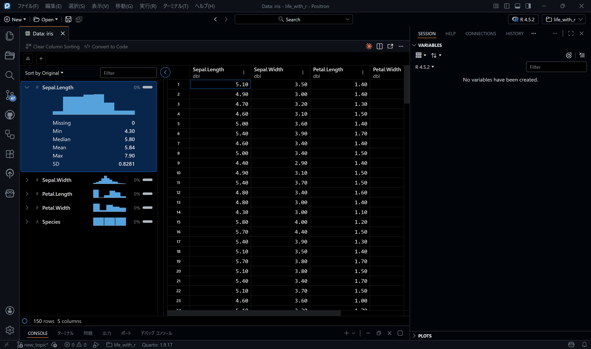

library(readr)
# CSVファイルを読み込む
data <- read_csv("data/sample_data.csv")6 データの読み込みと書き出し
ここまでの章で、RとIDEの準備、簡単なRの操作方法を学びました。いよいよ実際のデータを扱う方法のパートに入っていきます。
データ分析の第一歩は、データをRに読み込むことです。この章では、CSVファイルやExcelファイルからデータを読み込み、加工したデータを保存する方法について説明します。
6.1 学習内容
この章を読み終えると、以下ができるようになります。
- CSVファイルからデータを読み込む
- データの内容を確認する
- データをCSVファイルとして保存する
- Excelファイルからデータを読み込む
- 日本語の文字化け問題に対処する（エンコードの指定）
6.2 使用するパッケージ
この章では以下のパッケージを使用します。c()関数を使ってまとめてインストールできます。
# パッケージのインストール（初回のみ）
install.packages(c("readr", "readxl", "here"))6.3 CSVファイルの読み込み
CSVファイル（Comma-Separated Values）は、最も一般的なデータ形式の一つです。ExcelやGoogle スプレッドシートでも簡単に作成・保存できます。
6.3.1 readrパッケージを使う
Rにはread.csv()という標準関数もありますが、より高速で使いやすいreadrパッケージのread_csv()を使うことをおすすめします。readrパッケージはtidyverseにも含まれているので、tidyverseをインストールしている場合は追加でインストールする必要はありません。
ノートファイルパスの指定方法
ファイルパスは、プロジェクトのルートディレクトリ（.Rprojファイルがある場所、あるいはPositronで開いているフォルダ）からの相対パスで指定します。
例えば、プロジェクト内にdataフォルダを作り、その中にsample_data.csvを置いた場合は、"data/sample_data.csv"と指定します。
# 上記の例
my_project/
├── data/
│ └── sample_data.csv
└── analysis.Rproj6.3.2 hereパッケージでパスを管理する
プロジェクト管理の章で学んだように、hereパッケージを使うとさらに確実です。
library(here)
library(readr)
# hereを使ってパスを指定
data <- read_csv(here("data", "sample_data.csv"))here()関数は、プロジェクトのルートディレクトリからの相対パスを自動で構築してくれます。WindowsとMac/Linuxでパスの書き方が異なる問題も解決できます。
上記の例ではルートディレクトリにあるdataフォルダの中のsample_data.csvを読み込む、ということをしています。here("data/sample_data.csv")としても問題ありません。
6.4 データの確認
データを読み込んだら、まず内容を確認しましょう。
6.4.1 head() - 最初の数行を表示
# 最初の6行を表示（デフォルト）
head(data)# A tibble: 5 × 4
名前 年齢 部署 売上
<chr> <dbl> <chr> <dbl>
1 田中太郎 25 営業 1200
2 佐藤花子 30 開発 1500
3 鈴木一郎 35 営業 980
4 高橋次郎 28 開発 1350
5 伊藤三郎 42 総務 11006.4.2 glimpse() - データ構造を一覧
dplyrパッケージのglimpse()関数は、データの構造をコンパクトに表示してくれます。
library(dplyr)
# データ構造を確認
glimpse(data)Rows: 5
Columns: 4
$ 名前 <chr> "田中太郎", "佐藤花子", "鈴木一郎", "高橋次郎", "伊藤三郎"
$ 年齢 <dbl> 25, 30, 35, 28, 42
$ 部署 <chr> "営業", "開発", "営業", "開発", "総務"
$ 売上 <dbl> 1200, 1500, 980, 1350, 1100glimpse()を実行すると、以下のような情報が表示されます。
- 行数と列数
- 各列の名前と型（文字列、数値など）
- 各列の最初の数個のデータ
6.4.3 View() - データをスプレッドシート形式で表示
# データビューアーで開く
View(data)
ヒントIDE上でのデータ確認
RStudioでは、Environmentペインにあるデータ名をクリックすることでもView()と同じ結果が得られます。スプレッドシート形式でデータを確認できるので、非常に便利です。
Positronの場合は、画面右側にVARIABLESペインがあり、そこにデータが表示されるので、見たいデータをダブルクリックすれば同様に確認できます。Positronの場合は平均値や欠損数も表示されるので便利だと思います。

6.5 実践例：サンプルデータを読み込む
実際にサンプルデータを作成して読み込んでみましょう。
6.5.1 サンプルCSVファイルの作成
まず、プロジェクト内にdataフォルダを作成します。
# dataフォルダを作成（存在しない場合）
if (!dir.exists("data")) {
dir.create("data")
}次に、簡単なサンプルデータを作成して保存します。
library(readr)
# サンプルデータの作成
sample_data <- data.frame(
名前 = c("田中太郎", "佐藤花子", "鈴木一郎", "高橋次郎", "伊藤三郎"),
年齢 = c(25, 30, 35, 28, 42),
部署 = c("営業", "開発", "営業", "開発", "総務"),
売上 = c(1200, 1500, 980, 1350, 1100)
)
# CSVファイルとして保存
write_csv(sample_data, "data/sales_data.csv")6.5.2 データの読み込みと確認
# データを読み込む
sales_data <- read_csv("data/sales_data.csv")
# データの確認
print(sales_data)
# 構造を確認
glimpse(sales_data)6.6 データの書き出し
データを加工した後は、結果を保存する必要があります。
6.6.1 CSVファイルとして保存
library(readr)
# データをCSVファイルとして保存
write_csv(sales_data, "data/processed_sales.csv")
ヒントデータ保存のベストプラクティス
プロジェクト内でデータを整理する際は、以下のようなフォルダ構成がおすすめです。
my_project/
├── data/
│ ├── raw/ # 元データ（読み取り専用、編集しない）
│ └── processed/ # 加工済みデータ
├── scripts/
└── outputs/元データはrawフォルダに保存し、加工したデータはprocessedフォルダに保存することで、データの管理が容易になります。
6.7 日本語データの扱い
日本語を含むCSVファイルを扱う際、文字化けが発生することがあります。
6.7.1 文字コードの問題
Windowsで作成されたCSVファイルは、多くの場合Shift-JISという文字コードで保存されています。一方、R（とreadr）はデフォルトでUTF-8を想定しています。
6.7.2 文字化けの対処法
Shift-JISのファイルを読み込む場合は、エンコーディングを指定します。
# Shift-JISのCSVファイルを読み込む
data <- read_csv(
"data/japanese_data.csv",
locale = locale(encoding = "Shift-JIS")
)
注意文字コードの確認方法
ファイルの文字コードがわからない場合は、以下を試してください。
- まず何も指定せずに読み込んでみる
- 文字化けしたら、
locale = locale(encoding = "Shift-JIS")を追加 - それでもダメなら、
locale = locale(encoding = "CP932")を試す
ちなみにCP932はShift-JISのMicrosoft拡張版で、Windowsで作成されたファイルはCP932で保存されていることが多いです。
現代では、可能な限りUTF-8でデータを保存することが推奨されます1。
6.8 Excelファイルの読み込み
Excelファイル（.xlsxや.xls）からデータを読み込むには、readxlパッケージを使います。
6.8.1 readxlパッケージ
library(readxl)
# Excelファイルを読み込む
excel_data <- read_excel("data/sample_data.xlsx")6.8.2 シートの指定
Excelファイルに複数のシートがある場合、読み込むシートを指定できます。
# シート名で指定
excel_data <- read_excel("data/sample_data.xlsx", sheet = "売上データ")
# シート番号で指定（1から始まる）
excel_data <- read_excel("data/sample_data.xlsx", sheet = 2)6.8.3 範囲の指定
特定のセル範囲のみを読み込むこともできます。
# A1からD10の範囲を読み込む
excel_data <- read_excel("data/sample_data.xlsx", range = "A1:D10")
ノートExcelファイルとCSVファイルの使い分け
- Excelファイル: 複数シート、書式設定、数式などが必要な場合
- CSVファイル: シンプルなデータの保存・共有、他のツールとの互換性が必要な場合
データ分析では、Excelで作成したデータをCSV形式でエクスポートして使うことも多いです。
6.9 練習問題
ここまで学んだ内容を確認しましょう。
ヒント問題1: サンプルデータの作成と保存
以下の条件でデータを作成し、CSVファイルとして保存してください。
- 列: 商品名、価格、在庫数
- 行: 5つの商品
解答例
library(readr)
# サンプルデータの作成
products <- data.frame(
商品名 = c("りんご", "バナナ", "オレンジ", "ぶどう", "いちご"),
価格 = c(150, 100, 200, 300, 250),
在庫数 = c(50, 80, 30, 20, 40)
)
# 保存
write_csv(products, "data/products.csv")
ヒント問題2: データの読み込みと確認
問題1で作成したCSVファイルを読み込み、以下を確認してください。
- データの最初の3行
- データの構造
解答例
library(readr)
library(dplyr)
# データの読み込み
products <- read_csv("data/products.csv")
# 最初の3行
head(products, n = 3)
# 構造の確認
glimpse(products)
ヒント問題3: hereパッケージを使う
問題2の読み込みを、hereパッケージを使って書き直してください。
解答例
library(readr)
library(here)
# hereを使ってデータを読み込む
products <- read_csv(here("data", "products.csv"))6.10 まとめ
この章では、以下を学びました。
- ✅
readrパッケージを使ったCSVファイルの読み込み - ✅
head(),glimpse(),View()によるデータ確認 - ✅
write_csv()によるデータの保存 - ✅ 日本語データの文字化け対策
- ✅
readxlパッケージを使ったExcelファイルの読み込み - ✅
hereパッケージによる確実なパス管理
これで、外部ファイルからデータを読み込み、確認し、保存することができるようになりました。次の章では、読み込んだデータを加工する方法を学びます。
ノート次のステップ
次の章「データハンドリング基礎 - dplyr入門」では、読み込んだデータを自在に操作する方法を学びます。データの絞り込み、並び替え、列の選択など、実務で頻繁に使う操作を習得しましょう。
とはいえ、国のオープンデータなどではまだまだShift-JISのデータも多いので要注意です。↩︎